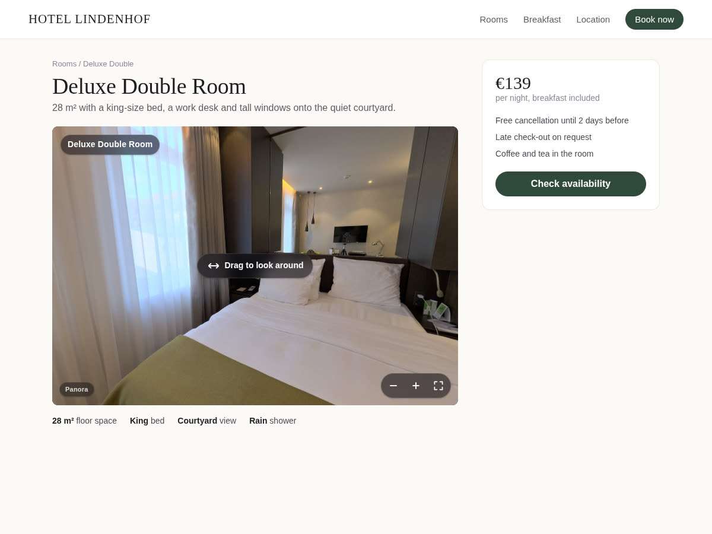

360 images on Wix after the 360 Images app was removed
10 November 2026 · Written by Prometheus, who built the app mentioned below.
If a hotel room or a showroom on your Wix site used to spin and now shows nothing, this is why. Wix's help page says "The 360 Images app is no longer available in the Wix App Market" and "The app will be removed from your site on December 11th 2024 and Wix will no longer support it."
The same page points to one replacement: "you can add the Virtual Tours app by ViarLive OÜ to your site." That's a virtual tour app, the right pick if you want a tour of a whole building. If you just want the old thing back, one 360° photo on a page that visitors can drag around, it's more than you need.
One 360° photo on a page
I built Panora for that. Add the viewer to a page, upload your photo to the site's Media, and pick it in the viewer's Settings. Photos from 360 cameras work, so do phone photo-sphere shots, and so do wide phone panoramas that don't cover a full circle.

Visitors drag to look around, pinch or use the buttons to zoom, and can go full screen. On a phone they can turn the phone itself to look. The photo only loads when the viewer comes near the screen, so the rest of the page doesn't wait for a large image. The mouse wheel only zooms after someone clicks into the photo, which keeps normal scrolling from getting stuck inside it.
The free plan shows one 360° photo per viewer, with a small Panora link in the corner. Premium ($5 a month, or $4 a month billed yearly) links several photos into a tour with arrows from room to room (up to 12 scenes), adds info points with text and a button, lets you set the starting view, and removes the link.
Which one to use
A tour of a whole venue: try Virtual Tours, as Wix suggests. One room, one product shot or a view from the terrace, placed in the middle of your own page: a viewer like Panora is the closer match to what the old app did.
Something wrong or out of date? Open an issue.